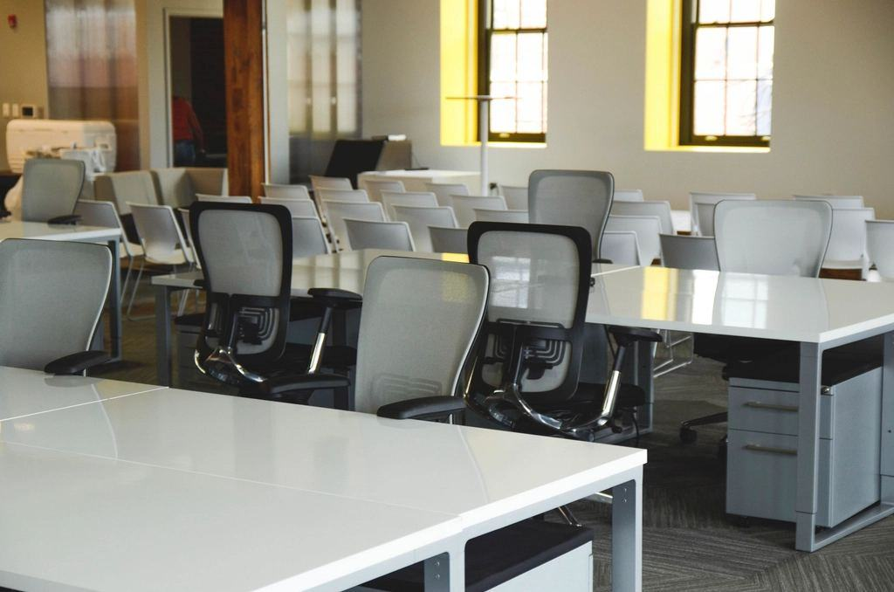

Om Järnbergs
Järnbergs startades 1983 av Sirkka Järnberg, som städade verkstäder och bodar åt entreprenörerna i Malmberget. Sedan 2011 ägs och leds företaget av Erik Lantto, som började som sommarvikarie 1996 och i dag har 64 anställda i Gällivare och Kiruna.
Vi städar verkstäder, omklädningsrum, kontor och arbetarboenden i Gällivare och Kiruna – på natten, i 35 minusgrader och på fyra språk.
Järnbergs startades 1983 av Sirkka Järnberg, som städade verkstäder och bodar åt entreprenörerna i Malmberget. Sedan 2011 ägs och leds företaget av Erik Lantto, som började som sommarvikarie 1996 och i dag har 64 anställda i Gällivare och Kiruna.
Våra kunder är verkstäder, underleverantörer till gruvindustrin, skolor, kontor och de modulboenden som har vuxit upp för alla som bygger om Malmfälten. Vi städar i treskift, och personalen talar svenska, finska, meänkieli och arabiska.

Från en städfirma i Malmberget till 64 anställda i två städer


Boka ett platsbesök
Berätta vilken arbetsplats det gäller och hur era skift ser ut, så kommer vi ut inom en vecka.
- Telefon
- 070-174 06 30
- Öppettider
- Kontoret vardagar 7–16 – städning alla timmar på dygnet
Kontakta oss
- Kontor
- Malmvägen 12
982 38 Gällivare - Telefon
- 070-174 06 30
- Öppettider
- Kontoret vardagar 7–16 – städning alla timmar på dygnet